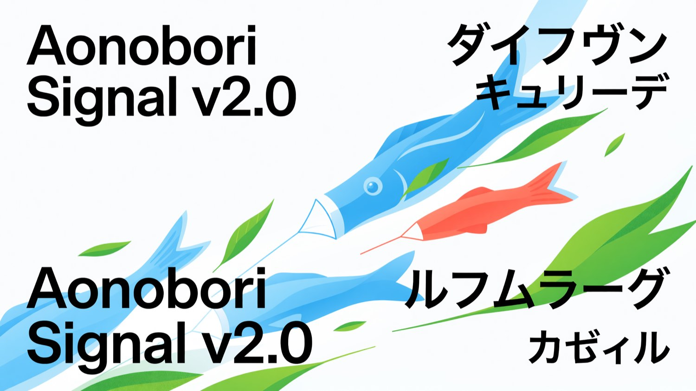
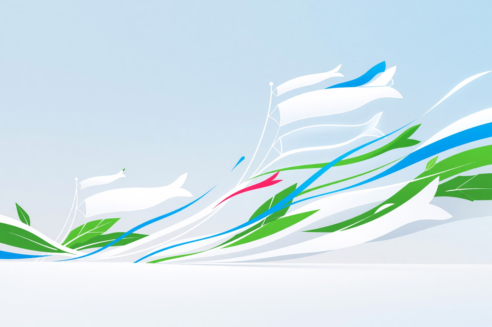

Wind-aware launch windows
Combine forecast confidence, site exposure, rigging notes, and field leads into one clean go/no-go rhythm.

Nobori Field gives parks, schools, and cultural teams one bright operating layer for Kodomo no Hi launches: wind windows, sponsor readiness, field crews, public timing, and every koinobori moment rising on cue.
Product world
The work is practical: permits, wind, rigging, families, donors, field updates. The interface stays bright enough for a public celebration and precise enough for the adults running it.

Combine forecast confidence, site exposure, rigging notes, and field leads into one clean go/no-go rhythm.
Schools, merchants, sponsors, and parks teams see the same signal: what is ready, what needs a call, what can wait.
Schedule the first hoist, procession, food court opening, and evening close with a shared run-of-show that reads at a glance.
Operating flow
Aonobori Signal turns festival complexity into clean lanes: each lane has a clear owner, a vivid state, and enough white space to make the next action obvious.
Import site plans, assign mast clusters, and mark the morning windows where koinobori will rise cleanly.
Permits, insurance, sponsor copy, school pickup points, and vendor access become visible without draining the mood.
Turn internal certainty into a polished public schedule with live changes and one calm source of truth.
Launch desk
Start with one district, one riverfront, or one school network. Nobori Field gives the team a shared operating surface and the public a bright, confident day.